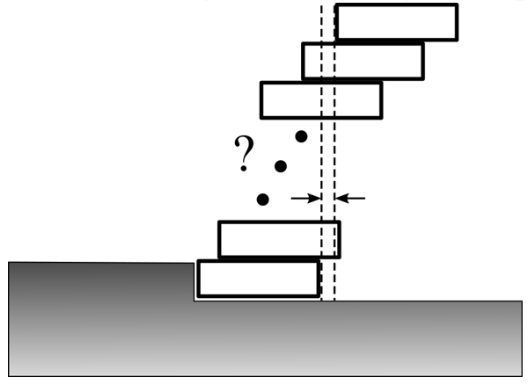

2019 SIN Problem 1
Question
The Mad Trapper is being pursued by the Mounties on foot over the arctic ice. After a long chase, he finally eludes them, and stops for the night to rest. He decides to build an igloo and cuts a number of snow bricks, each of dimension \(20 \times 20 \times 20\) cm, using his snow knife. What is the total number of loose, identical snow bricks needed so that, when stacked on each other as illustrated, the top brick completely overhangs the bottom one? \(\textbf{(A) } 4 \qquad\textbf{(B) } 5 \qquad\textbf{(C) } 6\qquad\textbf{(D) } 7 \qquad\textbf{(E) } 8\)
Solution 1
Consider a block with length \(2l\) (for convenience sake). Let us now break up thre problem into smaller cases.
If \(N=2\), then the center of mass of the second block must rest on the edge of the first block so that the maximum overhang is \(l\). In a sense, we are creating a stable configuration where the center of mass of the system is as far right as possible. If each block has a mass \(m\) then the center of mass is:
$$x_\text{cm}=\frac{m(l)+m(2l)}{2m}=\frac{3l}{2}$$
If \(N=3\), we wish to place two blocks in such a way such that they are in a stable configuration and that their center of mass rests on the edge of the first block. To maximize the overhang, we want the center of mass of these two blocks to be as far right as possible. But as we mentioned earlier, this is exactly the \(N=2\) case! As calculated above, the two-block system will be placed such that \(\frac{3l}{2}\) of the second block rests on top of the first block as this is the center of mass of the two-block system. This way, the second block has an overhang of \(2l-\frac{3l}{2}=\frac{l}{2}\). The third block already has an overhang of \(l\) giving a total overhang of \(l(1+1/2)\). We can calculate the center of mass of the three-block system as $$x_\text{cm} = \frac{m(l)+2m(2l)}{3m} = \frac{5l}{3}$$
For \(N=4\), we can place a stable three-block system such that their center of mass is as far right as possible and lies on top of the edge of the first block. Again, this is just the \(N=3\) scenario. As calculated above, the three-block system will be placed such that \(\frac{5l}{3}\) of the second block rests on top of the first block, such that the second block has an overhang of \(2l-\frac{5l}{3}=\frac{l}{3}\). Since the third and fourth block already has an overhang of \(l(1+1/2)\), the total overhang becomes \(l(1+1/2+1/3)\).
By now, you can guess (and rightly so!) that for \(N=5\) the maximum overhang is \(l(1+1/2+1/3+1/4) \approx 2.08l\). Since this is longer than a single block, the answer to the question is \(\boxed{\textbf{(B) } 5}\) blocks.
To formalize this conjecture, we can prove via induction. Let us assume for some \(N\) that the maximum overhang is \(l(1+1/2+1/3+\cdots+1/(N-1)\). Then the center of mass is given by $$x_\text{cm} = \frac{m(l)+(N-1)m(2l)}{Nm} = \frac{2lN-l}{N}$$
For the \(N=N+1\) case, as with before, the \(N=N\) configuration of blocks will be placed such that the center of mass is on the rightmost edge of the bottommost block. As calculated, \(\frac{2lN-l}{N}\) of the second block will be on top of the first block with only \(2l-\frac{2lN-l}{N}=\frac{l}{N}\) left to overhang. The other \(N-1\) blocks have an overhang of \(l(1+1/2+1/3+\cdots+1/(N-1)\) giving a total overhang of \(l(1+1/2+1/3+\cdots+1/(N-1)+1/N\) for the \(N=N+1\) case. Since this is valid for \(N=4\) it must be valid for all values of \(N\) proving the conjecture.
Solution 2 (Video)
Remarks
- This is commonly known as the block stacking problem
- We used the postulate that if the center of mass rests on an edge, then it will be in static equilibrium. Prove this postulate by using a symmetry argument.
- The overhang for the \(n^\text{th}\) term is \( \sum_{k=1}^{N-1} \frac{l}{k}\) which is known as the harmonic sum. Interestingly as the limit of \(N\) approaching infinity, this actually diverges. Thus thereotically, the overhang can be arbitrarily big!
- For large \(N\), the overhang \(L\) behaves as \(l/2 \cdot \ln(N)\) or \(N \approx e^\frac{2L}{l}\). If \(L\) increases by a tiny bit, \(N\) increases exponentially.
- The method discussed to stack blocks in this question isn't actually the most effective. See Hall (2005) for a discussion of other methods.
Similar Problems
There are no similar problems at the time.